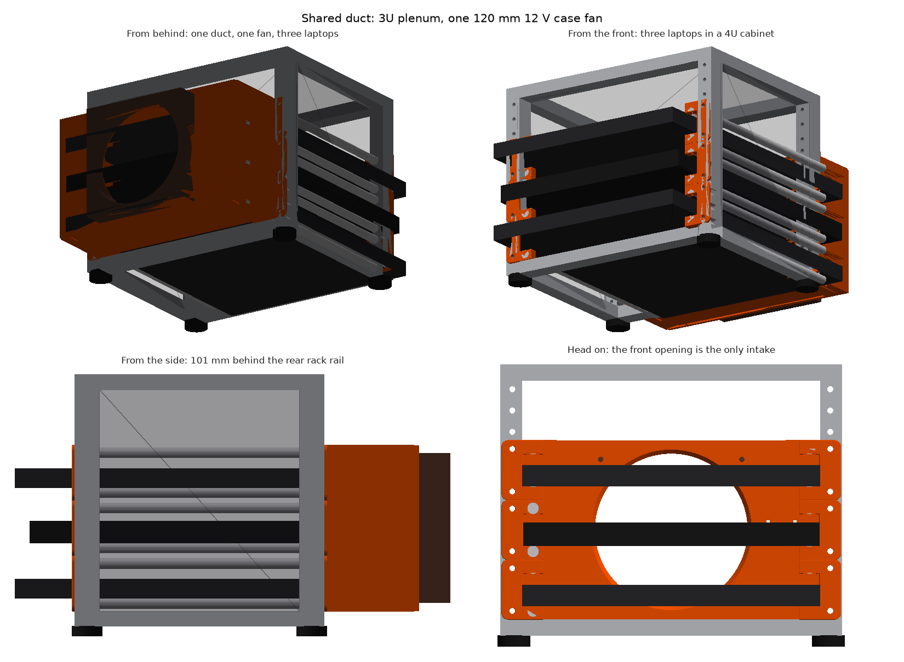
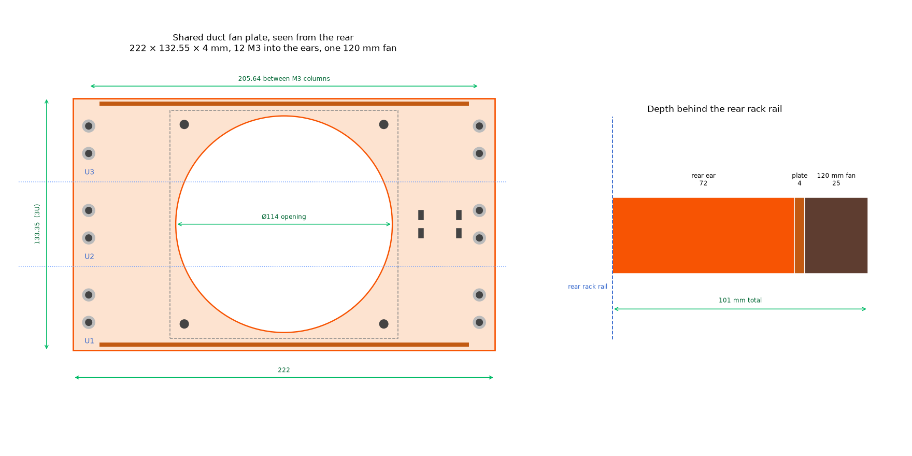
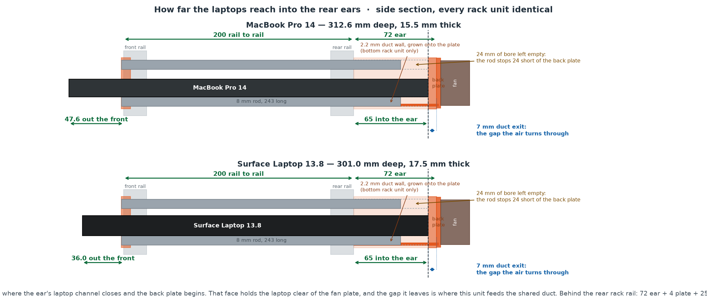
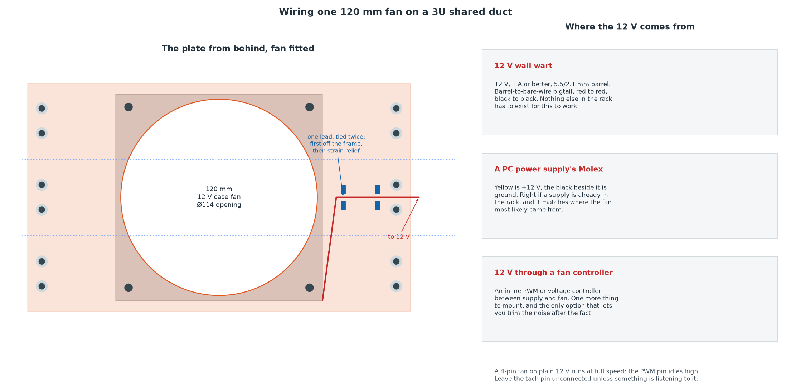

Three laptops, one duct, one fan.
A fork of the mini rack laptop trays that stops giving every laptop its own fans, and gives all three of them one shared plenum instead. Free files, MIT licensed.
Drag to spin, scroll to zoom. Orange is printed, brown is the fan, and the model is built from the same meshes the checks run against.
What changed, and why
The original project builds this rack one tray at a time. Each laptop gets its own rack unit, its own duct closed by its own two panels, its own plate, and its own three 40mm fans. That is a good design for one or two laptops and it does not scale. Three of them is nine fans, nine leads, three power runs, and three ducts that cannot help each other. Add a laptop and you print another whole duct.
So this fork throws away everything behind the laptops and keeps everything in front. The ears, the rods, the sliding drawer, the ear variants, the print orientation, all unchanged. Behind them, one plenum three rack units tall with a single 120mm fan pulling on it.

The part that made it easy
A front ear and a rear ear, which is what I call the brackets, hold 8mm smooth rod that the laptop slides in on. That part is untouched. What made the shared duct almost free is something the ears were already doing.
Each rear ear fills its rack unit exactly, floor to ceiling, with no gap at either end. Stack three pairs and the little 2mm side walls on their outer faces line up into one continuous wall 133mm tall. The sides of the duct seal themselves, with no new part and no change to a part that already prints and fits.
Which leaves only the top and the bottom to close. So the plate grows two duct walls instead of six, and the four rails at the boundaries in between get left empty on purpose. Each of those is closed at its outer end by the ear itself, so it is a dead end rather than a hole. Filling them in would split the plenum back into three ducts, which is the exact thing this was for.

Why a case fan
Because everybody has one in a drawer. A 120mm frame, 105mm screw pitch and 12V are what every PC fan built in the last thirty years already is, so a fan pulled out of a dead tower drops straight in. The original needed 40mm fans for the good reason that 40mm is the largest thing that stands upright inside one rack unit. Three rack units is 133mm, and that is enough room for a fan most people already own.
Here is the honest part. One big fan is quieter, needs one lead and one supply, and pulls better against the duct's back pressure than a row of small ones. It is not more airflow than nine 40mm fans, and I would rather say that here than let the page imply otherwise.
The measurement that matters came out of the checking script, which works out the plenum's free area from the actual meshes with three laptops sitting in it. The cavity is 13,649mm2. The fan opening is 10,207. So on this design the opening is the restriction, where on the original the openings were comfortably bigger than the duct. That is the trade for going to one fan, stated in numbers instead of adjectives.
It is also why the opening is chamfered. A sharp edged hole in a 4mm plate makes the air separate as it turns in, so the hole that passes air is smaller than the hole you cut. 3mm at 45 degrees on the duct side fixes most of that, and it costs nothing: the plate prints face down, so the chamfer is on the upward side and every layer sits on the one below it. No support, no extra time, no change to where the fan seals.
I looked at a pocket for the fan to drop into and at a collar reaching into the duct, and neither one earns its place. The pocket eats the 3mm of flat the fan seals against, to locate a fan that four corner screws already locate. The collar would sit exactly where the middle laptop's exhaust gap feeds the fan, blocking the air it was supposed to be guiding.

The thing that can go wrong
Six ears stacked three high only seal if they genuinely touch. The model butts them at exactly 44.45mm, and the check says that seals. Open a 0.2mm gap between them, which is well within what a real rack's rail holes will do to you, and the duct is open to the room along that seam.
It is not a disaster. It is a thin slot, not a hole, and the fan still pulls through the plenum. But it is the one failure this version has that the original could not, because the original never stacked anything. Look at the seams before you blame the fan, and put a strip of foam tape down them if it whistles.
The rest of the duct is checked rather than assumed. The script boolean intersects every pair of parts for interference, then floods the air in a cross section to see if it reaches the outside. It does, by 0.88mm2, which is the deliberate 0.1mm of clearance each duct wall needs to slide into its rail. To prove that is the only way out, the same test runs again against a plate whose walls reach all the way in. That one seals. So the duct has no hole in it beyond the clearance it needs to go together, and that clearance is nine thousandths of one percent of the fan opening.
Wiring, and the guard
One fan, one lead, and the only thing worth getting right is where the 12V comes from. A wall wart with a barrel pigtail is the answer if nothing else lives in the rack. A PC supply's Molex is the answer if one does, and it matches where the fan came from. An inline controller is the answer if you want to be able to quiet it down later. All three are drawn on the page below.
One warning, and it is the original's warning turned around. That project ran 5V fans and had to avoid USB cables that secretly boost to 12V. This one runs 12V on purpose, so do not feed it from a USB port and expect it to spin properly.

There is also an optional printed guard. A 120mm fan spinning in the open back of a rack is the one part of this build that can bite, and a flat grille on the same four screws fixes it. The first version I drew blocked three quarters of the opening, which is a restrictor with a nicer name. The one in the repo leaves 77 percent open, which is about where a stamped steel guard lands.
Get the files
Everything is in the repo, MIT licensed.
- STLs for every part, verified watertight
- 3MF plates for PrusaSlicer. Ears on one, print it three times. The duct on another, print it once. The guard on a third if you want it
- The plate builds without Fusion. It is a rectangle with two fins, so there is a script that makes the STL from primitives on any machine with Python. The ears still need Fusion, because they have real shape in them
- Every dimension lives in one file, so the Fusion part and the printable mesh cannot drift apart
- Set it to two laptops and an 80mm fan by changing two numbers. It refuses combinations that will not physically fit
- About 172g of PETG for the plate, plus roughly 165g of ears per laptop, one fan, four rods each, and M3 hardware
The project this came from is still there and still the right answer for one or two laptops: mini-rack-laptop-trays.
Still untested
The geometry is checked. The airflow is not. Nothing here has been in front of a thermometer yet, and the one number I would most like to have, whether one 120mm fan actually beats nine 40mm ones in this particular box, is exactly the number a spreadsheet cannot tell me. That will be its own evening.